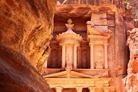

Inhibites since prehistoric times, this Nabataen caravan-city, situated between the Red Sea and the Dead Sea , was an important crossroads between Arabia, Egypt and Syria-Phoenicia. Petra is half-carved into the rock, and is surrounded by mountains riddled with passages and gorges. It's one of the world most famous archaeological sites, where ancient Eastern traditions blend with Hellenistic architecture.
